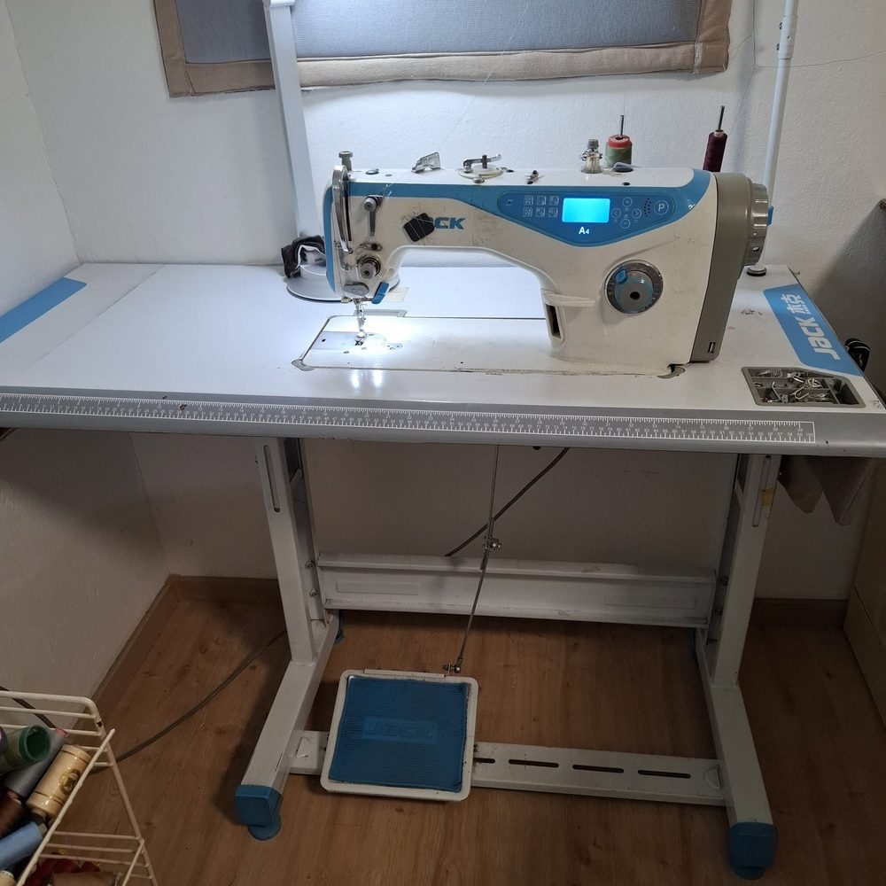
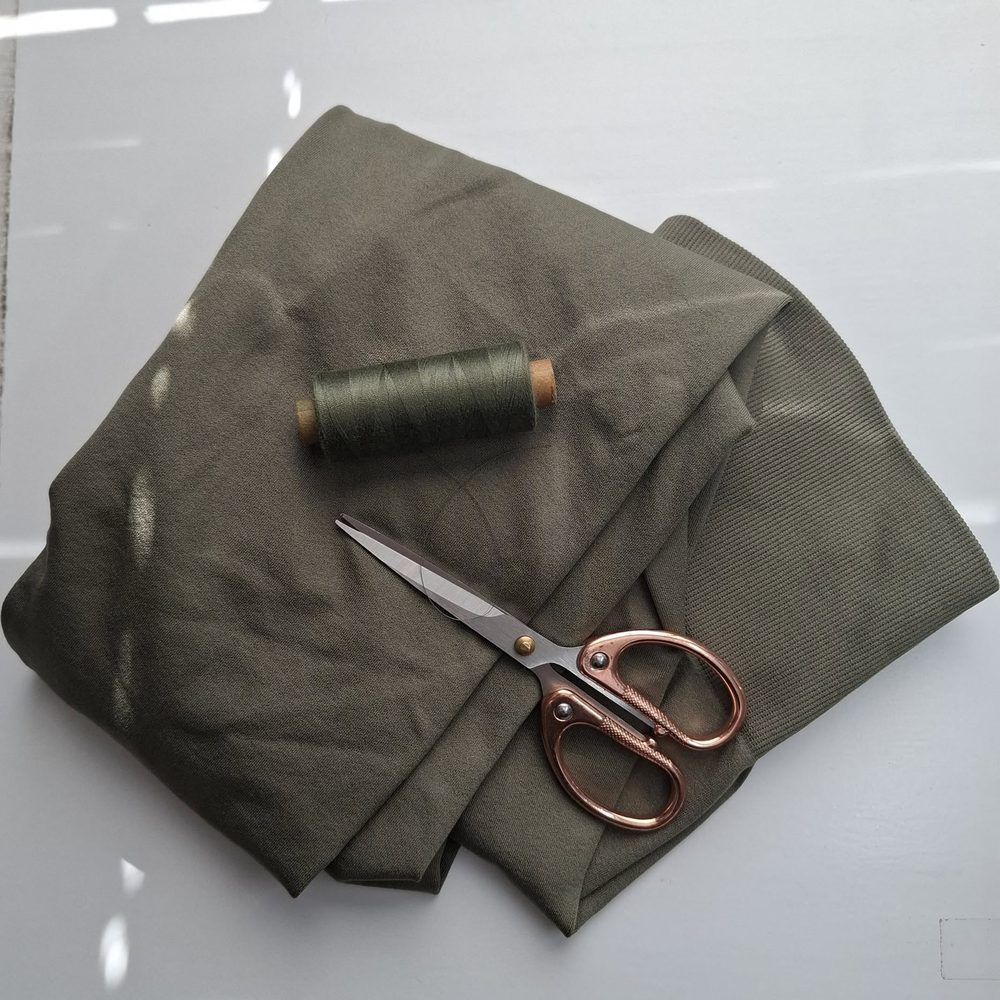
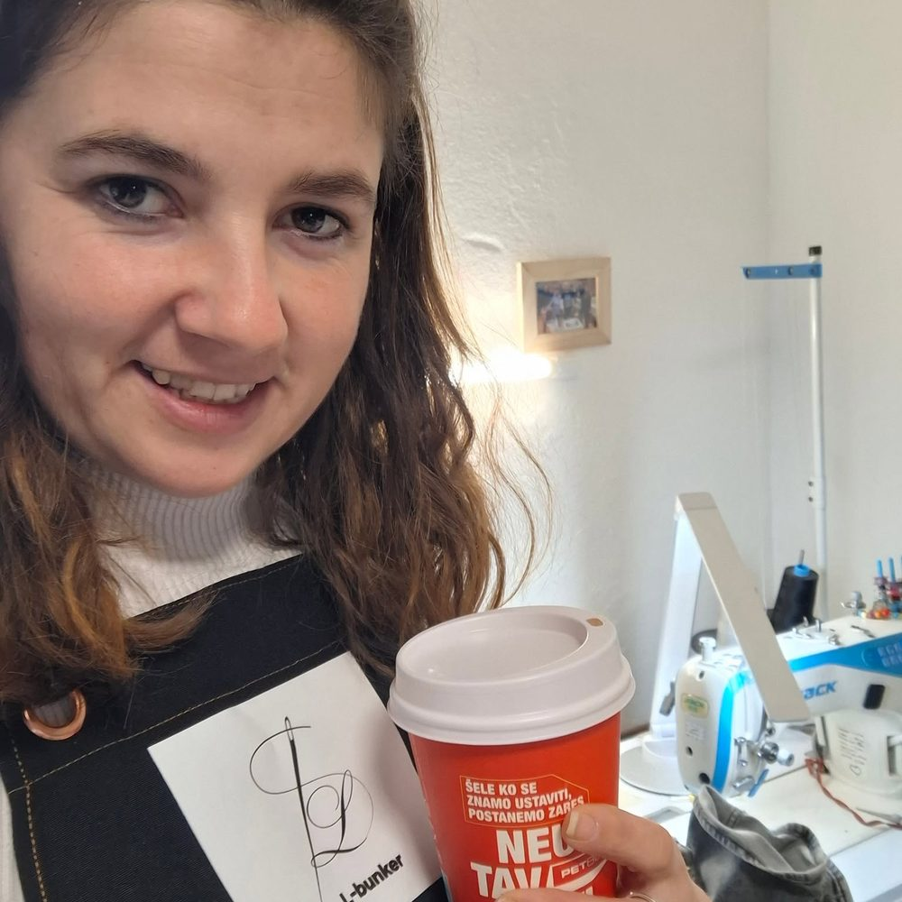

Šiviljska popravila
Krajšanje, ožanje, razširjanje, zadrgve, gumbi, krpljenje in preurejanje. Oblačilo, ki te ima rado, dobi novo priložnost.
CENA PO OGLEDU KOSA
Črnomelj · Bela Krajina · od 2025
Šiviljska popravila, preurejanja in unikatni izdelki. Vsak kos, ki pride skozi vrata bunkerja, se začne z individualno meritvijo — in konča kot oblačilo, ki sede, ker je šito zate.
Kaj lahko naredim zate
Delavnica je majhna, zato je pozornost velika. Vsak kos gledam, se ga dotaknem in ti povem, kaj je z njim mogoče narediti — preden se karkoli šije.
Krajšanje, ožanje, razširjanje, zadrgve, gumbi, krpljenje in preurejanje. Oblačilo, ki te ima rado, dobi novo priložnost.
CENA PO OGLEDU KOSA
Krila, obleke, torbe in domači tekstil, ki nastanejo iz enega kosa blaga in ene ideje. Ko je prodan, je res prodan.
EN KOS = EN IZDELEK
Od meritve do končnega šiva: kroj po tvoji postavi, blago po tvoji želji, rok po dogovoru. Za priložnosti, ki si jih vredne.
ROK SE DOGOVORIVA
Iz delavnice
Stroj, blago in roke, s katerimi nastaja vsak šiv. Fotografije so moji originali, posnete na Belokranjski cesti — kar vidiš, je res tu.



Kako poteka
Naročilo po meri ni spletna oddaja in konec. Je pet korakov, v katerih sva skupaj — zato na koncu tudi prav sede.
KORAK 01
Napišeš mi, kaj si želiš. Odgovorim z besedami, ne s formularjem.
KORAK 02
Seznama se v Črnomlju ali meritve vzameš sama po mojem vodniku.
KORAK 03
Izbereva blago in barve. Kroj naredim po tvoji meri, ne po tabeli.
KORAK 04
V bunkerju nastane kos. Za večje naročilo ti pošljem fotografijo napredka.
KORAK 05
Oblačilo pomeriš, po potrebi popravim, prevzameš. Šele takrat je opravljeno.
»Šivanje je strast. Šiviljska popravila in unikatni izdelki pa so pot — vsak kos pride z zgodbo, vsak odide z njo.«
— LUCIJA PIŠKURIČ, ČRNOMELJ